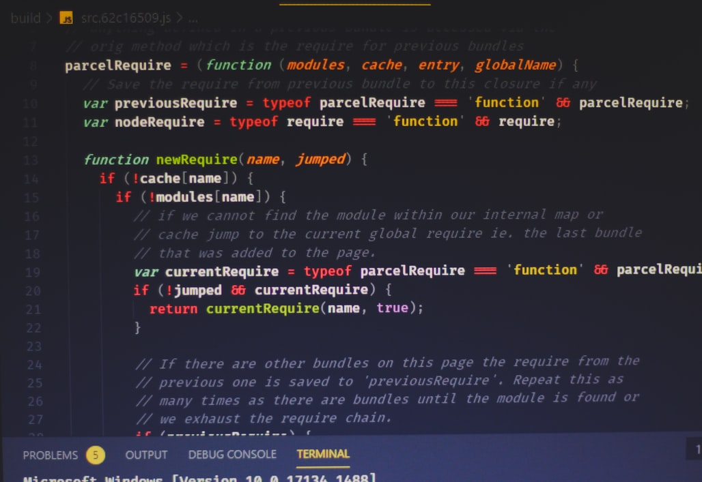

Web Application
Welcome back again to this site where you will get the difference between different topics as discussed above. Michabrand-©2020
Setup
There are two main categories of coding, scripting and programming for creating Web Applications: One is client Side Scripting / Coding - Client Side Scripting is the type of code that is executed or interpreted by browsers. Client Side Scripting is generally viewable by any visitor to a site (from the view menu click on "View Source" to view the source code). Below are some common Client Side Scripting technologies:
- HTML (HyperText Markup Language)-provide the skeleton of the website.
- CSS (Cascading Style Sheets)-Used for cascading the web and also little animation can be added to the website.
- JavaScript-Sripting language for dynamic web applications which provide ease of access using buttons and animation. It has useful libraries which are used in web dynamics. Want more folow my github page...
Server Side Scripting / Coding - Server Side Scripting is the type of code that is executed or interpreted by the web server. Server Side Scripting is not viewable or accessible by any visitor or general public. Below are the common Server Side Scripting technologies:
- PHP (very common Server Side Scripting language
- ASP (Microsoft Web Server (IIS) Scripting language)
- Python (general purpose high-level programming language and Server Side Scripting language - free redistribution)
- Ruby on Rails (Ruby programming's Web Application Framework - free redistribution)
Web Application Frameworks
Web Application Frameworks are sets of program libraries, components and tools organized in an architecture system allowing developers to build and maintain complex web application projects using a fast and efficient approach. Web Application Frameworks are designed to streamline programming and promote code reuse by setting forth folder organization and structure, documentation, guidelines and libraries (reusable codes for common functions and classes).
Web Application Lifecycle is the process of developing a web application and involvement of the multiple teams that are engaged in the development process. Each organization may set forth its own unique style of operating. Some companies follow a certain standard model such as SDLC (System Development Life Cycle) or Agile Software Development Model. SDLC is the traditional process of developing software or web applications by including research to identify and define the application requirements, information analysis, architectural design and specifications blueprint, team involvement, programming, testing and bug fixing, system testing, implementation and maintenance. Agile Software / Web Application Development is the iterative development process and development process practices that focus on collaboration of people involved and provide a better procedure to allow revisions and evolution of web application requirements. Agile methodology includes research, analysis, project management, design, programming, implementation, frequent testing, adaptation and maintenance.
Thanks for reading the guidline all that entails to start your personal project. Dont forget the information written here is not in detailed format. You can get the full information when you visit my github page whre you can clone
or alternatively download my project templates.
Be positive programming is all about practise MichaBrand-©2020/july.com
Artificial Intelligence.
Hello guys, here is another vast program of machine learning. All the way from the top we have Artificial Intelligence, comming to machine learning which is nested under A.I, deep learning is another achievement made from machine learning...This is going to be my second project, where you will be able to interract and chat with my chatbox...comming-soon.read more below:-
AI programming focuses on three cognitive skills: learning, reasoning and self-correction. Learning processes. This aspect of AI programming focuses on acquiring data and creating rules for how to turn the data into actionable information. The rules, which are called algorithms, provide computing devices with step-by-step instructions for how to complete a specific task. Reasoning processes. This aspect of AI programming focuses on choosing the right algorithm to reach a desired outcome. Self-correction processes. This aspect of AI programming is designed to continually fine-tune algorithms and ensure they provide the most accurate results possible.

Types of Artificial Intelligence
Reactive machines. These AI systems have no memory and are task specific. An example is Deep Blue, the IBM chess program that beat Garry Kasparov in the 1990s. Deep Blue can identify pieces on the chessboard and make predictions, but because it has no memory, it cannot use past experiences to inform future ones.
Limited memory. These AI systems have memory, so they can use past experiences to inform future decisions. Some of the decision-making functions in self-driving cars are designed this way.
Theory of mind. Theory of mind is a psychology term. When applied to AI, it means that the system would have the social intelligence to understand emotions. This type of AI will be able to infer human intentions and predict behavior, a necessary skill for AI systems to become integral members of human teams.
Self-awareness. In this category, AI systems have a sense of self, which gives them consciousness. Machines with self-awareness understand their own current state. This type of AI does not yet exist.
Tensor Flow
TensorFlow is an end-to-end open source platform for machine learning. TensorFlow is a rich system for managing all aspects of a machine learning system; however, this class focuses on using a particular TensorFlow API to develop and train machine learning models. See the TensorFlow documentation for complete details on the broader TensorFlow system.
TensorFlow APIs are arranged hierarchically, with the high-level APIs built on the low-level APIs. Machine learning researchers use the low-level APIs to create and explore new machine learning algorithms. In this class, you will use a high-level API named tf.keras to define and train machine learning models and to make predictions. tf.keras is the TensorFlow variant of the open-source Keras API.
TensorFlow provides all of this for the programmer by way of the Python language. Python is easy to learn and work with, and provides convenient ways to express how high-level abstractions can be coupled together. Nodes and tensors in TensorFlow are Python objects, and TensorFlow applications are themselves Python applications. The actual math operations, however, are not performed in Python. The libraries of transformations that are available through TensorFlow are written as high-performance C++ binaries. Python just directs traffic between the pieces, and provides high-level programming abstractions to hook them together.
This unit deals with all that makes up machine to think on their own amd perform multiple task than normal human being. As technology changes we must be flexible. For the future is build now with one step. I prefer to handle this part as my entere course becouse is so applicable in the comming generations. Learn python and its library and start to code practise makes perfect. Take great changes. ©MichaBrand2020$#.com
. Folow for much more...